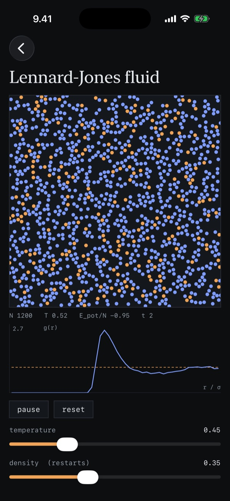
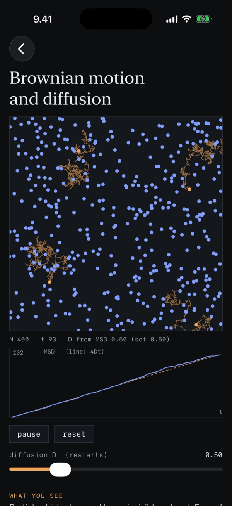
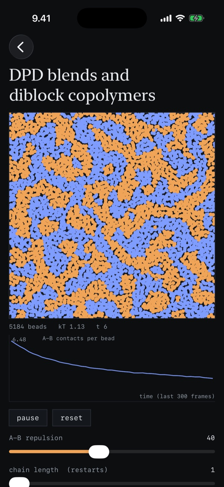
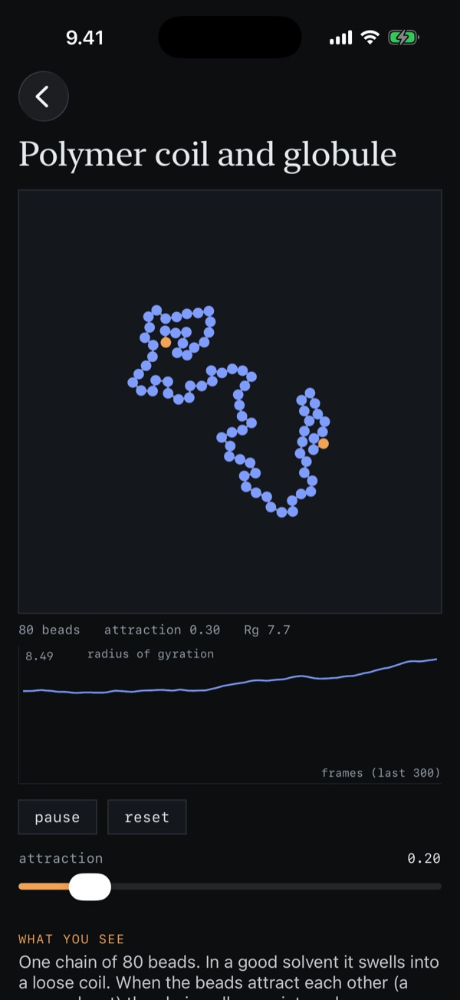
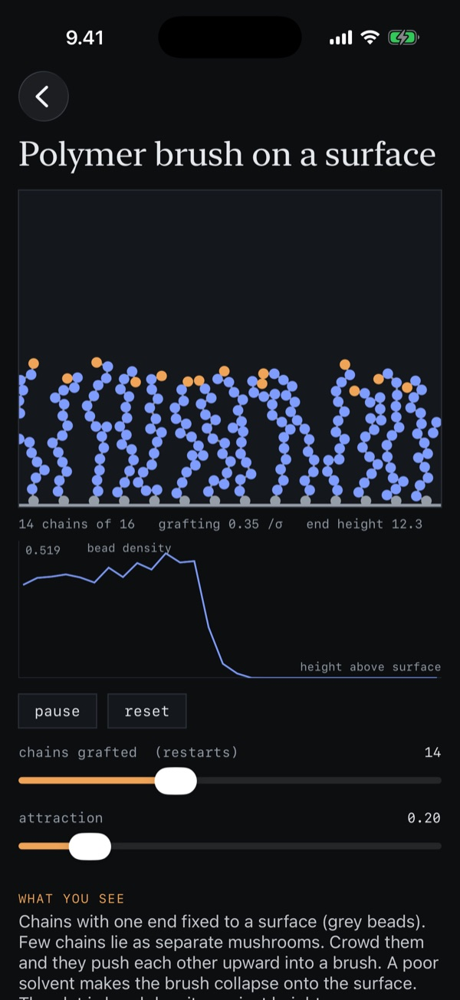
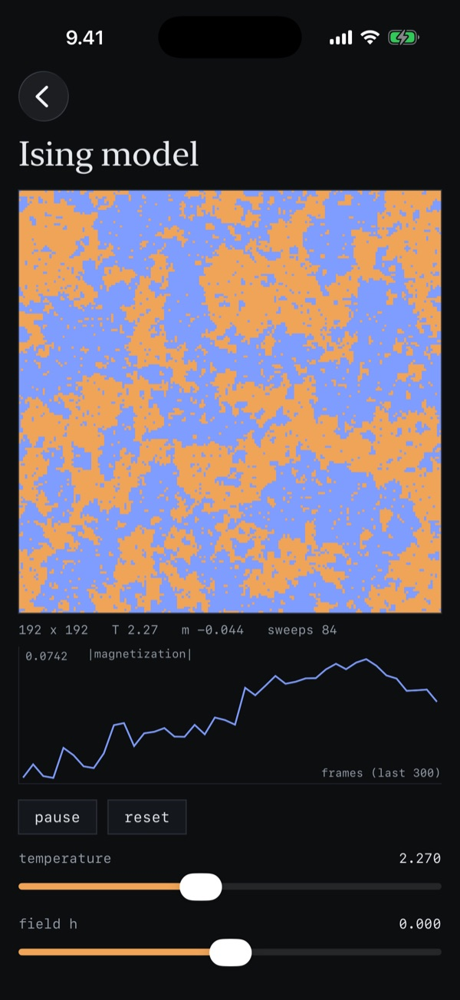
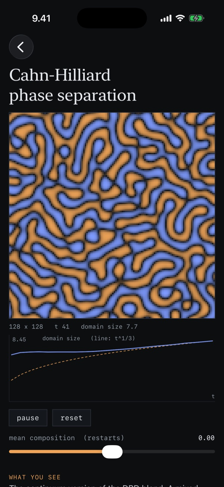
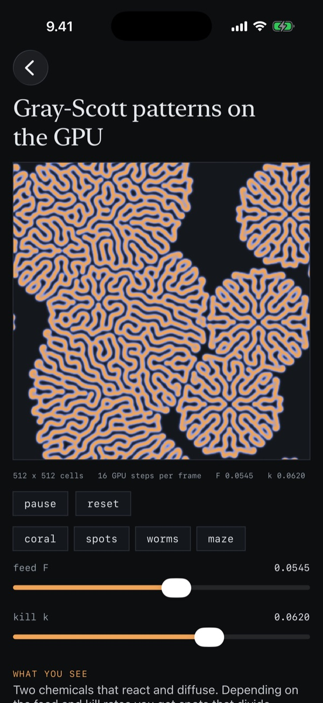

Bead Lab is an iPhone app with eight simulations that run live on the phone, from a Lennard-Jones liquid to polymer blends and patterns that form on their own. Each one has sliders and a short page on the model behind it. Most of them also plot one quantity as they run, and in some you can heat, stir or paint the system with your finger. The simulations are written from scratch in Swift, and the Gray-Scott patterns run on the phone's GPU.
in three groups, as in the app

1200 atoms in molecular dynamics, with velocity Verlet, a Langevin thermostat and cell lists. Change the temperature and the density, heat a spot with your finger, and watch the peaks of g(r).

400 particles in overdamped Langevin dynamics, four of them with trails. The mean squared displacement follows the 4Dt line for the D you set.

5184 soft beads with the Groot and Warren model. Raise the repulsion between A and B, and a blend separates. In longer chains, the A and B blocks are bonded together, so they can only separate into small domains.

An 80-bead chain with an attraction you can tune. In a poor solvent, the chain collapses into a globule, and the radius of gyration shows when.

Between 4 and 32 chains grafted to a wall. The more chains there are, the further they stretch away from the surface, as the density profile shows.

192 × 192 spins with Metropolis Monte Carlo. Near the critical temperature, about 2.27, domains of every size appear, and a finger paints a patch of up spins.

A 128 × 128 composition field, solved with finite differences. The domains slowly grow, and the plot compares their size with the t1/3 law.

A 512 × 512 grid that runs on the GPU as a Metal compute shader. Change the feed and kill rates, or pick coral, spots, worms or maze.
the same model as in the app
Swift, SwiftUI and Metal
The simulations have no screen code, and all of them share one small protocol: sliders, a step, a picture and a touch. The particle simulations split their force loops over all CPU cores.
The sliders, the live plot and the page on each model.
A Metal compute shader updates the 512 × 512 grid 16 times per frame.
One frame of any CPU simulation takes 2 to 7 ms on a 4-core test machine, well inside the 16 ms of a 60 Hz screen.
Ten engine tests check, for example, that the thermostats hold their temperature, that the Brownian motion gives back the D you set, that DPD blends separate at high aAB, and that Cahn-Hilliard keeps the total composition.
GitHub Actions runs the tests and builds the app for the iPhone simulator.
built with Xcode
Bead Lab is not in the App Store. To run it on an iPhone, you build it with Xcode on a Mac, signed with a free Apple Account. With a free account, the app stays on the phone for seven days, and then it has to be installed again. The code is on GitHub, with the steps to build it.
for the models in the app